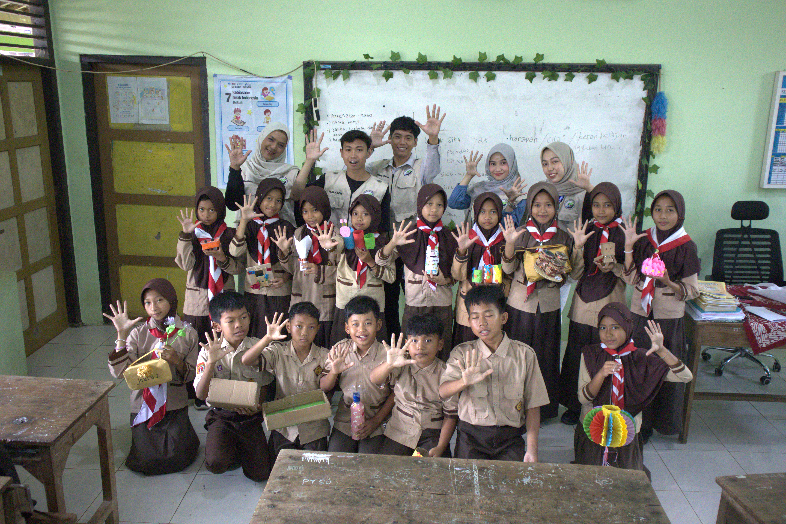

Edukasi Daur Ulang Sampah dengan Pendekatan Ramah Anak, KKN UNISNU Jepara Ajak Siswa Berkreasi
SDN 1 Papasan
Desa Papasan, Kec. Bangsri, Kab. Jepara

SDN 1 PapasanBERITA ACARA
EDUKASI DAUR ULANG SAMPAH DENGAN PENDEKATAN RAMAH ANAK, KKN UNISNU JEPARA AJAK SISWA BERKREASI — SDN 1 PAPASAN
Pada hari Minggu, 3 Agustus 2026, telah dilaksanakan kegiatan Edukasi Pendidikan Berbasis Inovasi dan Lomba Daur Ulang Sampah di SDN 1 Papasan, Kecamatan Bangsri, Kabupaten Jepara, yang diselenggarakan oleh Mahasiswa KKN UNISNU Desa Papasan.
Rangkaian kegiatan di SDN 1 Papasan diawali dengan koordinasi bersama pihak sekolah pada tanggal 29 Juli, guna membahas teknis pelaksanaan, jadwal, serta mekanisme kegiatan yang akan diikuti oleh siswa-siswi.
Selanjutnya, dilaksanakan sesi sosialisasi pada tanggal 3 Agustus. Sesi sosialisasi dikoordinir oleh penanggung jawab program kerja, Khalimatus Sa'diyah selaku Koordinator Mahasiswa Desa (Kormades) sekaligus penanggung jawab progja, bersama Nur Laila Eka Rahmawati. Materi disampaikan berupa edukasi mengenai pentingnya menjaga lingkungan dan daur ulang sampah, disertai game interaktif agar peserta lebih antusias dan mudah memahami materi yang diberikan.
Kegiatan dilanjutkan dengan sesi penjurian dan pengumpulan karya pada tanggal 7 Agustus. Sesi ini diawali dengan refleksi bersama mengenai pentingnya daur ulang sampah, dengan penekanan bahwa tidak ada karya peserta yang buruk, sehingga seluruh peserta tetap merasa dihargai atas hasil karyanya. Sembari menunggu proses penjurian, dilaksanakan game "Pohon Harapan" sebagai pengisi acara. Penilaian karya dilakukan oleh dua orang guru dari SDN 1 Papasan yang bertindak sebagai juri. Rangkaian kegiatan ditutup dengan sesi pengumuman pemenang, pembagian hadiah, dan foto bersama.
Kegiatan berlangsung dengan tertib dan lancar, serta mendapat sambutan dan antusiasme yang baik dari pihak sekolah, guru, maupun siswa yang mengikuti seluruh rangkaian kegiatan.
Demikian Berita Acara ini dibuat dengan sebenar-benarnya untuk dipergunakan sebagaimana mestinya.
Ringkasan Kegiatan — SDN 1 Papasan
Rundown Kegiatan — SDN 1 Papasan
Pertemuan koordinasi dengan pihak SDN 1 Papasan untuk membahas teknis pelaksanaan, jadwal, serta mekanisme kegiatan.
Sesi edukasi dan game interaktif tentang pentingnya menjaga lingkungan dan daur ulang sampah bersama siswa-siswi SDN 1 Papasan.
Refleksi bersama, pelaksanaan game "Pohon Harapan", serta penilaian karya daur ulang oleh guru SDN 1 Papasan.
Pengumuman pemenang lomba, pembagian hadiah, dan foto bersama sebagai penutup rangkaian kegiatan di SDN 1 Papasan.
MI NU Papasan
Desa Papasan, Kec. Bangsri, Kab. Jepara
 MI NU Papasan
MI NU Papasan
BERITA ACARA
EDUKASI DAUR ULANG SAMPAH DENGAN PENDEKATAN RAMAH ANAK, KKN UNISNU JEPARA AJAK SISWA BERKREASI — MI NU PAPASAN
Pada hari Senin, 4 Agustus 2026, telah dilaksanakan kegiatan Edukasi Pendidikan Berbasis Inovasi dan Lomba Daur Ulang Sampah di MI NU Papasan, Kecamatan Bangsri, Kabupaten Jepara, yang diselenggarakan oleh Mahasiswa KKN UNISNU Desa Papasan.
Rangkaian kegiatan di MI NU Papasan diawali dengan koordinasi bersama pihak sekolah pada tanggal 29 Juli, guna membahas teknis pelaksanaan, jadwal, serta mekanisme kegiatan yang akan diikuti oleh siswa-siswi.
Selanjutnya, dilaksanakan sesi sosialisasi pada tanggal 4 Agustus. Sesi sosialisasi dikoordinir oleh penanggung jawab program kerja, Khalimatus Sa'diyah selaku Koordinator Mahasiswa Desa (Kormades) sekaligus penanggung jawab progja, bersama Nur Laila Eka Rahmawati. Materi disampaikan berupa edukasi mengenai pentingnya menjaga lingkungan dan daur ulang sampah, disertai game interaktif agar peserta lebih antusias dan mudah memahami materi yang diberikan.
Kegiatan dilanjutkan dengan sesi penjurian dan pengumpulan karya pada tanggal 8 Agustus. Sesi ini diawali dengan refleksi bersama mengenai pentingnya daur ulang sampah, dengan penekanan bahwa tidak ada karya peserta yang buruk, sehingga seluruh peserta tetap merasa dihargai atas hasil karyanya. Sembari menunggu proses penjurian, dilaksanakan game "Pohon Harapan" sebagai pengisi acara. Penilaian karya dilakukan oleh dua orang guru dari MI NU Papasan yang bertindak sebagai juri. Rangkaian kegiatan ditutup dengan sesi pengumuman pemenang, pembagian hadiah, dan foto bersama.
Kegiatan berlangsung dengan tertib dan lancar, serta mendapat sambutan dan antusiasme yang baik dari pihak sekolah, guru, maupun siswa yang mengikuti seluruh rangkaian kegiatan.
Demikian Berita Acara ini dibuat dengan sebenar-benarnya untuk dipergunakan sebagaimana mestinya.
Ringkasan Kegiatan — MI NU Papasan
Rundown Kegiatan — MI NU Papasan
Pertemuan koordinasi dengan pihak MI NU Papasan untuk membahas teknis pelaksanaan, jadwal, serta mekanisme kegiatan.
Sesi edukasi dan game interaktif tentang pentingnya menjaga lingkungan dan daur ulang sampah bersama siswa-siswi MI NU Papasan.
Refleksi bersama, pelaksanaan game "Pohon Harapan", serta penilaian karya daur ulang oleh guru MI NU Papasan.
Pengumuman pemenang lomba, pembagian hadiah, dan foto bersama sebagai penutup rangkaian kegiatan di MI NU Papasan.